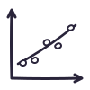

Physik · Einführungsphase NRW
Bewegung beschreiben. Zusammenhänge erkennen.
Wie hängen Ort, Geschwindigkeit und Beschleunigung zusammen? Starte mit einem einfachen Fall und lies die passenden Diagramme.
Mechanik
2 Themen · 1 Übung BewegungenGleichförmige BewegungVerstehe, was die Graphen s(t), v(t) und a(t) über eine Bewegung aussagen.Thema öffnen ↗
BewegungenGleichmäßig beschleunigte BewegungErkenne an s(t), v(t) und a(t), wie die Geschwindigkeit zunimmt.Thema öffnen ↗
BewegungenGleichförmige BewegungVerstehe, was die Graphen s(t), v(t) und a(t) über eine Bewegung aussagen.Thema öffnen ↗
BewegungenGleichmäßig beschleunigte BewegungErkenne an s(t), v(t) und a(t), wie die Geschwindigkeit zunimmt.Thema öffnen ↗

Diagramme übenAusgleichsgerade zeichnenLege eine Gerade durch eine streuende Punktwolke und vergleiche sie mit der Ausgangsgeraden.Übung öffnen ↗